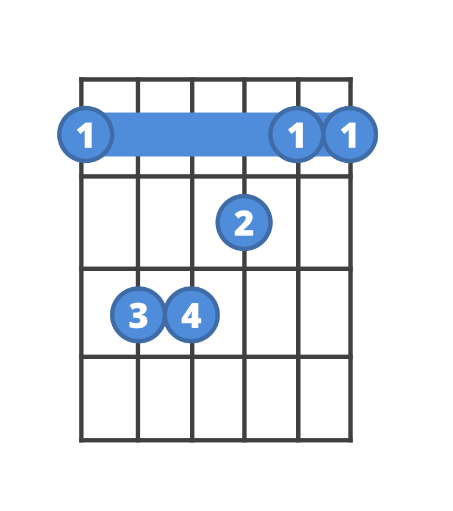
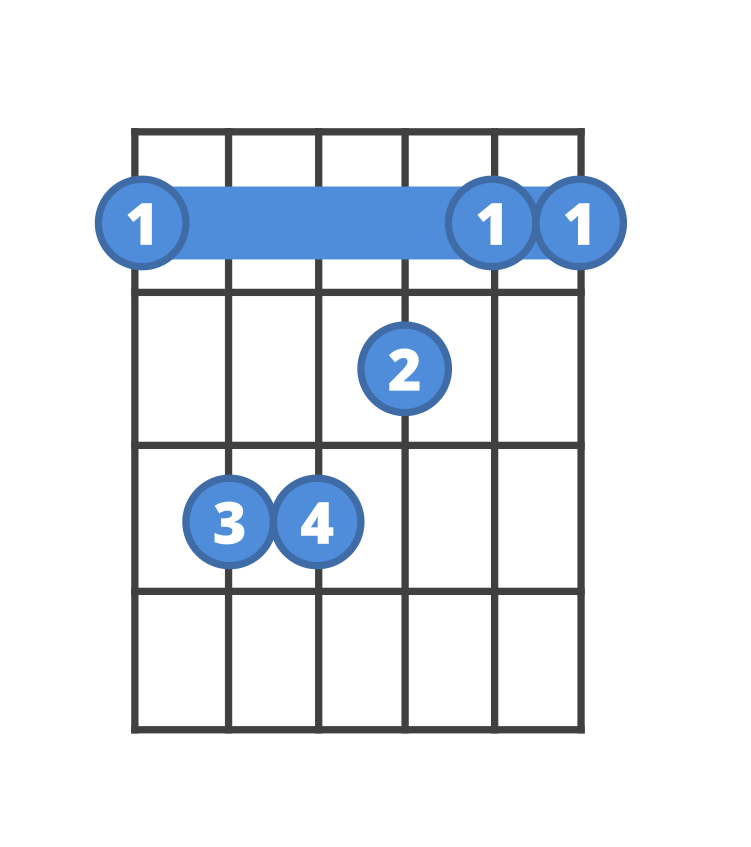

4. Meet I-V-vi-IV
- I (one) is the “home” chord—where you start and feel at rest.
- V (five) wants to move back to home—it's a little push.
- vi (six minor) feels a bit sad or gentle.
- IV (four) feels like a friendly detour before heading home.
Put them together: I → V → vi → IV
In the key of C major:
- I = C Major (people singing C-E-G)
- V = G Major (G-B-D)
- vi = A Minor (A-C-E)
- IV = F Major (F-A-C)

 
